Именной указатель
Герои проекта
56 человек: учёные, ректоры, заместители министров, основатели компаний и популяризаторы науки. Ищите по имени, должности или организации — например, «МФТИ».
-
 Рустам Айнетдинов
Генеральный директор SkyEng
С2 · В02глава книги
Рустам Айнетдинов
Генеральный директор SkyEng
С2 · В02глава книги
-
 Елена Александрова
Руководитель спецпрограмм мастерской «Сенеж»
С2 · В15глава книги
Елена Александрова
Руководитель спецпрограмм мастерской «Сенеж»
С2 · В15глава книги
-
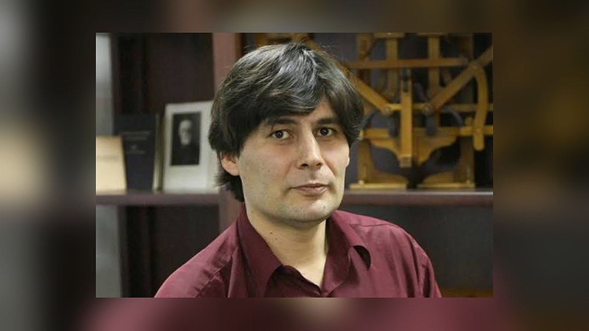
Николай Андреев Математик С1 · В34глава книги - Виталий Арбузов Генеральный директор INPRO.digital С1 · В17
-
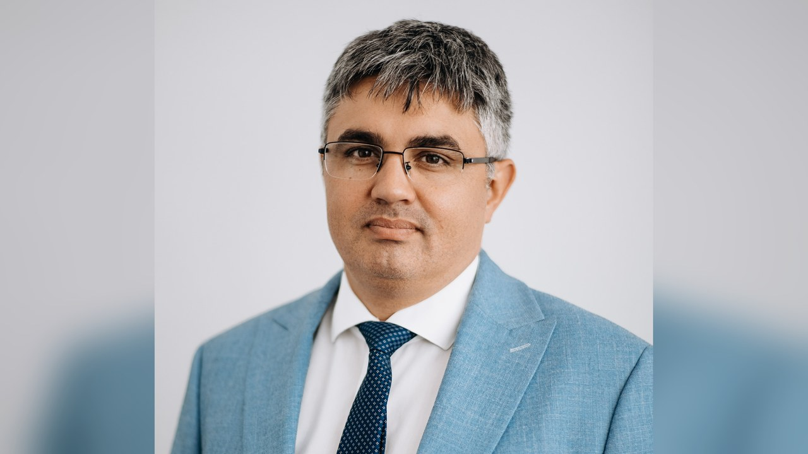
Искандер Бариев Директор Университета Иннополис С1 · В20 -
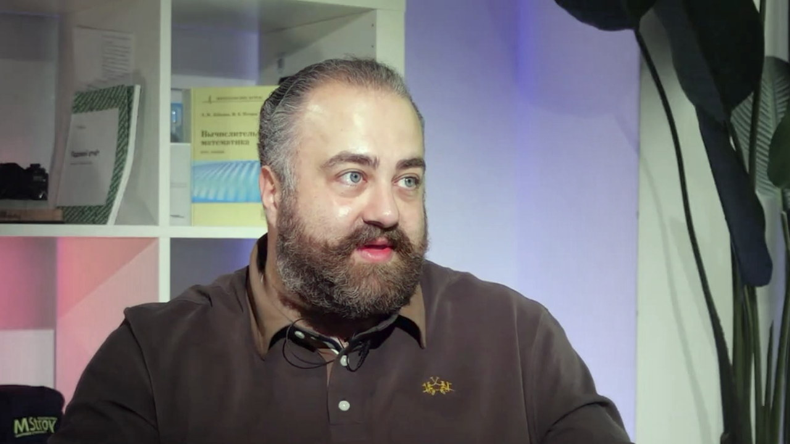
Армен Бекларян Проректор по исследованиям и инновациям Университета RWB С2 · В03глава книги - Гульнара Биккулова Директор Университета НЕЙМАРК С1 · В42
-
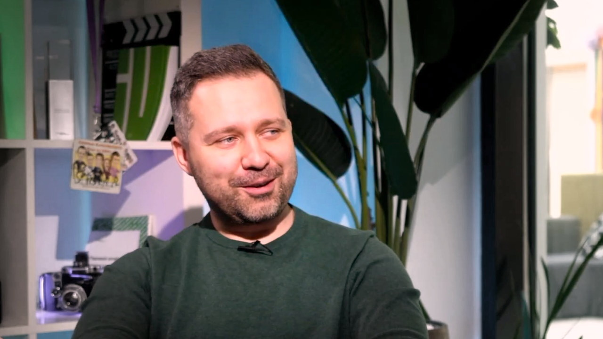
Евгений Бобров Проректор Университета Иннополис С1 · В11глава книги -
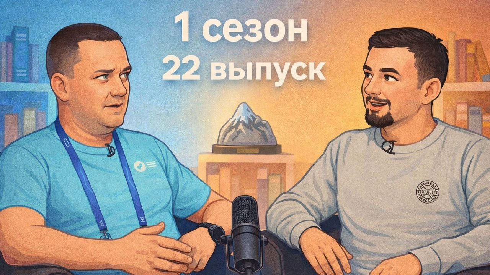
Егор Бологов Директор департамента обучения Технической академии Росатома С1 · В22 -
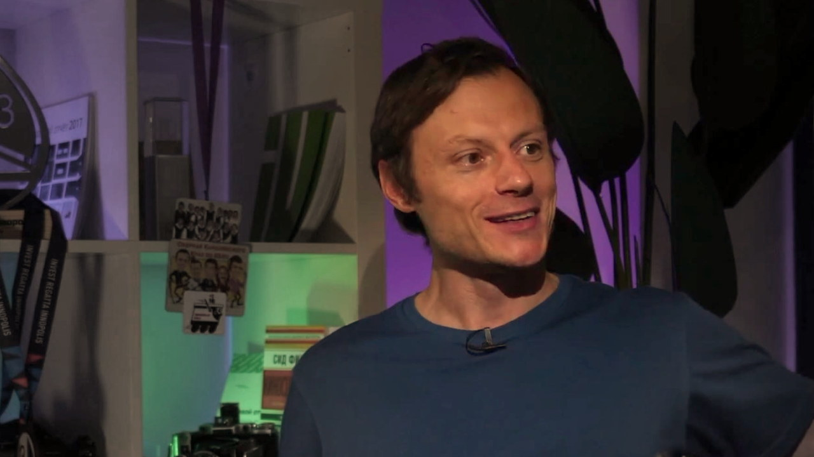
Александр Гасников Ректор Университета Иннополис С1 · В12глава книги -
 Василий Голубев
Профессор МФТИ, лаборатория вычислительной геофизики
С2 · В19глава книги
Василий Голубев
Профессор МФТИ, лаборатория вычислительной геофизики
С2 · В19глава книги
-
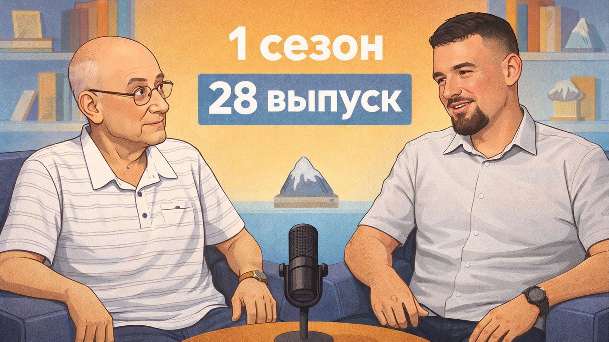
Александр Горбань Ведущий учёный, доктор физико-математических наук С1 · В28глава книги -
 Владимир Гордин
Профессор-исследователь ВШЭ и МФТИ
С1 · В19глава книги
Владимир Гордин
Профессор-исследователь ВШЭ и МФТИ
С1 · В19глава книги
- Андрей Грабовой Доцент МФТИ, старший научный сотрудник ИПУ РАН С2 · В18глава книги
- Евгений Данилов Генеральный директор АО «Иннополис» С1 · В06глава книги
-
 Сергей Ежов
Директор школы «Иннополис»
С1 · В10глава книги
Сергей Ежов
Директор школы «Иннополис»
С1 · В10глава книги
- Кристина Жукова Тренер по ораторскому искусству С1 · В25
- Андрей Зима Директор департамента ИИ-решений Ростелекома С2 · В04глава книги
-
 Марк Иванов
Ведущий научный сотрудник ФИЦ химической физики РАН
С2 · В14глава книги
Марк Иванов
Ведущий научный сотрудник ФИЦ химической физики РАН
С2 · В14глава книги
-
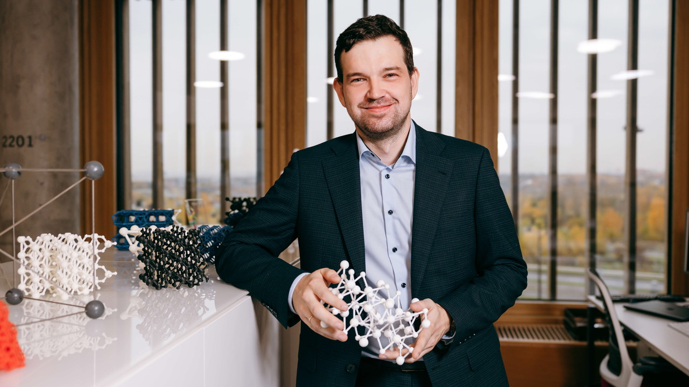
Александр Квашнин Профессор, руководитель научной группы Сколтеха С2 · В09глава книги -
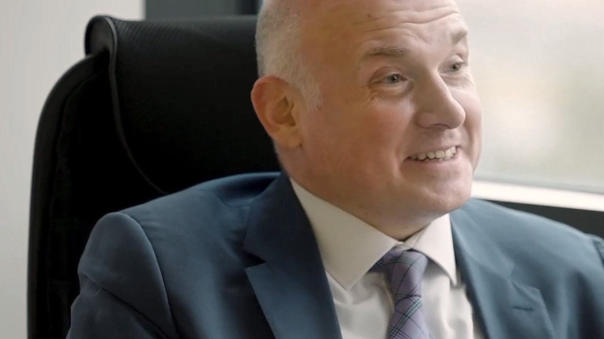
Филипп Копылов Профессор, директор Института персонализированной кардиологии С2 · В10глава книги -
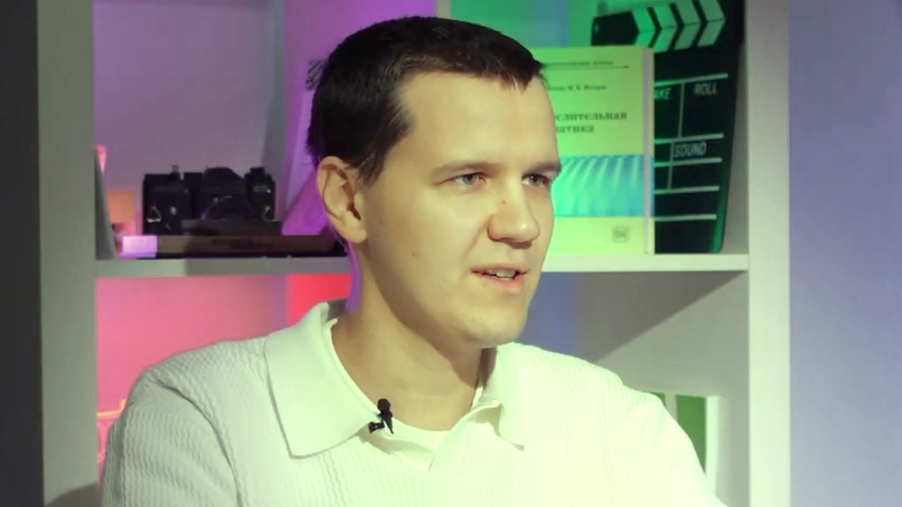
Александр Коротин Руководитель группы генеративного ИИ, Сколтех и AIRI С2 · В13глава книги -
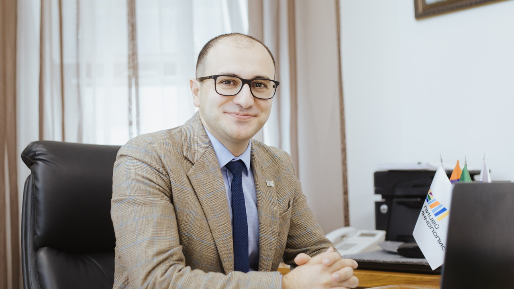
Арман Костанян Директор Лицея Иннополис С1 · В03глава книги - Александр Крайнов Директор по развитию технологий ИИ, Яндекс С1 · В39глава книги
-
 Светлана Красночуб
Исполнительный директор Фонда целевого капитала МФТИ
С1 · В07глава книги
Светлана Красночуб
Исполнительный директор Фонда целевого капитала МФТИ
С1 · В07глава книги
-
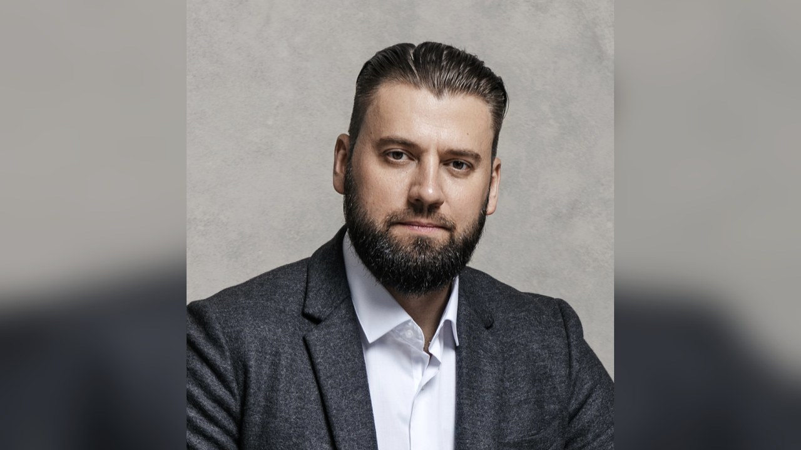
Михаил Кривопал Проректор по ДПО ДВФУ С1 · В44глава книги -
 Андрей Кузнецов
Директор лаборатории FusionBrain, AIRI (Сбер)
С1 · В43глава книги
Андрей Кузнецов
Директор лаборатории FusionBrain, AIRI (Сбер)
С1 · В43глава книги
- Кузнецов · Горнов · Николенко Трое учёных: доктора наук, исследователи ИИ С1 · В23глава книги
-
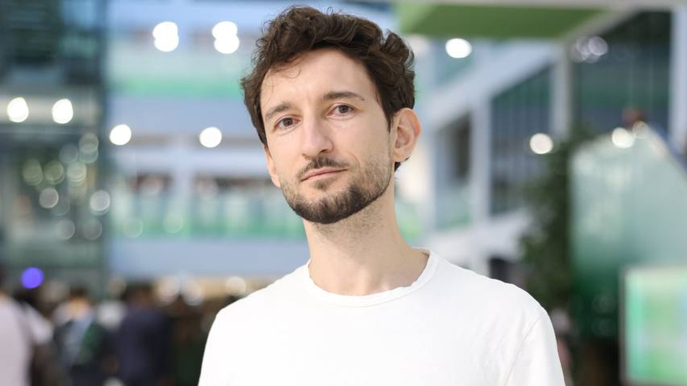
Владимир Максименко Профессор, доктор физико-математических наук С1 · В35глава книги - Валентин Малых Руководитель фундаментальных исследований MWS AI (МТС) С2 · В12глава книги
-
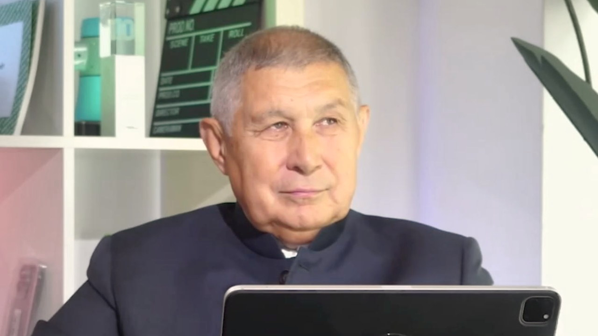
Рифкат Минниханов Президент Академии наук Республики Татарстан С1 · В29глава книги -
 Константин Михайлик
Заместитель министра строительства и ЖКХ РФ
С2 · В01глава книги
Константин Михайлик
Заместитель министра строительства и ЖКХ РФ
С2 · В01глава книги
-
 Алексей Никитин
Доцент кафедры общей математики ВМК МГУ
С1 · В36глава книги
Алексей Никитин
Доцент кафедры общей математики ВМК МГУ
С1 · В36глава книги
-
 Артём Оганов
Кристаллограф, химик, материаловед, профессор РАН
С1 · В45глава книги
Артём Оганов
Кристаллограф, химик, материаловед, профессор РАН
С1 · В45глава книги
- Ойбек Партов Заместитель проректора УрФУ по информационной политике С1 · В33глава книги
- Александр Перемятов Вице-президент Союза Торговых Центров С1 · В21
- Игорь Петров Доктор физико-математических наук, профессор С1 · В40глава книги
- Ольга Петрова Заместитель министра науки и высшего образования РФ С1 · В05глава книги
- Ксения Прохоренко Директор Единого центра карьеры С1 · В26
- Алексей Савватеев Математик, доктор физико-математических наук С1 · В18глава книги
-
 Николай Смирнов
Директор центра развития промышленной робототехники
С2 · В17глава книги
Николай Смирнов
Директор центра развития промышленной робототехники
С2 · В17глава книги
- Екатерина Солнцева Заместитель председателя правительства Нижегородской области С1 · В41глава книги
-
 Александр Тормасов
Профессор
С2 · В20глава книги
Александр Тормасов
Профессор
С2 · В20глава книги
- Арарат Тулынин Спортсмен С1 · В01
- Эдуард Фартушный Замдиректора Центра цифровой медицины и ИИ, Сеченовский университет С2 · В07глава книги
- Владислав Феофанов Руководитель спецпроектов АНО «ЦУРС», Минспорта НО С1 · В15
-
 Роланд Хильдебранд
Ведущий научный сотрудник МФТИ, к.ф.-м.н.
С2 · В05глава книги
Роланд Хильдебранд
Ведущий научный сотрудник МФТИ, к.ф.-м.н.
С2 · В05глава книги
-
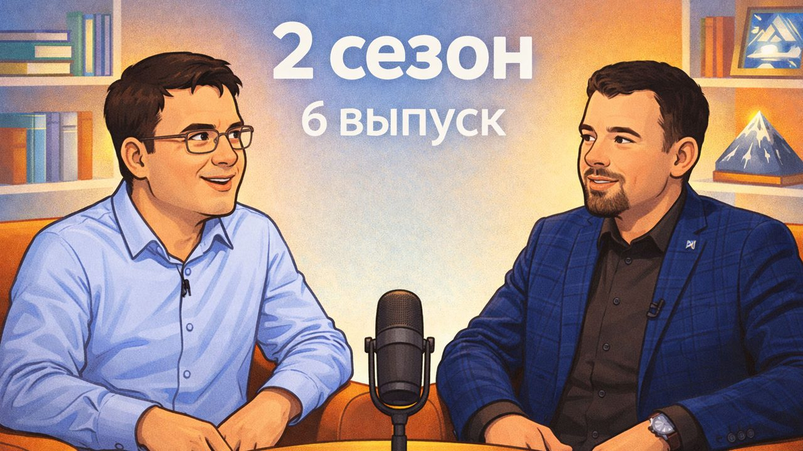
Николай Хохлов Доктор физико-математических наук, преподаватель МФТИ С2 · В06глава книги -
 Юрий Чехович
Завлабораторией ИПУ РАН, основатель «Думейт»
С2 · В16глава книги
Юрий Чехович
Завлабораторией ИПУ РАН, основатель «Думейт»
С2 · В16глава книги
- Максим Чугунов Генеральный директор Promobot С1 · В14
- Леонид Шабалин Директор передовой инженерной школы КАИ С1 · В08глава книги
- Руслан Шагалеев Заместитель председателя правления фонда «Сколково» С1 · В30глава книги
- Эдуард Шереметцев Заместитель министра энергетики РФ С1 · В38глава книги
- Дмитрий Щеголев Ректор Нижегородского архитектурно-строительного университета С1 · В31глава книги
- Георгий Щелканов Директор по работе с вузами VK С1 · В37
-
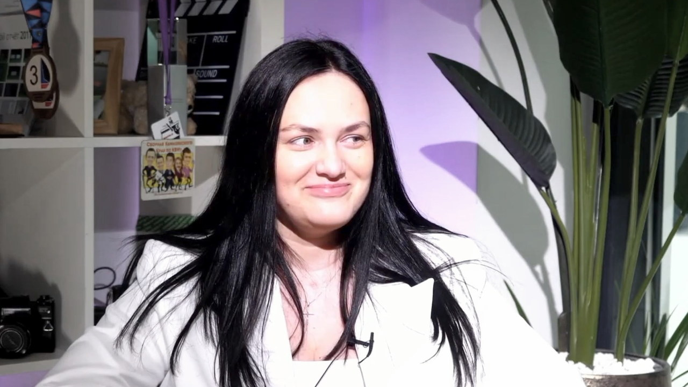
Татьяна Юсупова Основатель и генеральный директор «SayHire» С1 · В24
Никого не нашлось. Попробуйте другое слово или сбросьте фильтры.